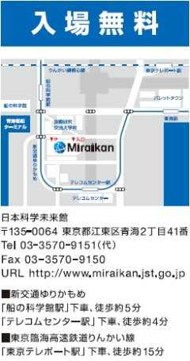
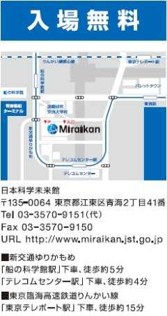

■09.05.13
5月11日より12日までWEBが閲覧できない状態にな
っており，ご迷惑をおかけして申し訳ありませんでした．
■09.05.05
・企画紹介を更新しました．
→■Cグループ「天文学への誘(いざな)い」の個別
紹介ページをアップしました．
→■Dグループの企画をコーナー別の紹介にしま
した．
■09.01.29
・開催日が決定しました．
2009年6月6日(土)・7日(日)
日本科学未来館(お台場) 7階
6日(土) 10：00〜17：00
7日(日) 10：00〜16：00
■09.05.05
・企画紹介を更新しました．
→■Cグループ「天文学への誘(いざな)い」の個別
紹介ページをアップしました．
→■Dグループの企画をコーナー別の紹介にしま
した．
■09.04.22
・企画紹介を更新しました．
・お知らせ(一般)を更新しました．
■09.04.10
・お知らせ(学内)を更新しました．
■09.03.27
・お知らせ(学内)を更新しました．
→過去の更新情報はこちら
■09.04.10
・新入生オリエンテーションの場所が決まりました．
→4月19日(日)12：00〜 九段校舎2階ゼミ室4
■09.03.27
・学長表彰にて感謝状をいただきました！
→活動日誌(ブログ)に記事を掲載
■08.11.23
・実行委員募集中！ →詳細ページへ
■08.09.01
・「第4回みらい研究室〜科学へのトビラ〜」
来年6月開催予定
・実行委員会の再構築と新人事のお知らせ
|

 
